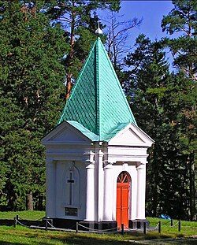
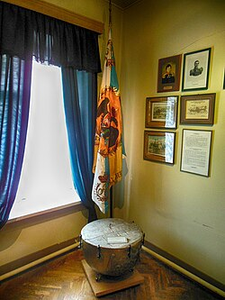
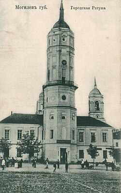

12 (24) июня 1812 года 600-тысячная наполеоновская армия напала на Россию. Перед лицом тройного численного превосходства противника русские войска начали отступление. 11 (23) июля 1812 года между деревнями Салтановка и Фатово, в 12 км юго-западнее Могилёва, начался бой между войсками 7-го пехотного корпуса под командованием генерал-лейтенанта Н. Раевского и французскими войсками под командованием маршала Л. Даву. Русские войска дали бой французам, чтобы отвлечь их внимание от переправы основных сил 2-й армии через Днепр. В память о сражении под Салтановкой в 1812 году был воздвигнут памятник.

Во время Первой мировой войны, 8 августа 1915 года, из-за отступления фронта на восток, из г. Барановичи, в Могилёв была перенесена ставка Верховного главнокомандующего. Ставка размещалась на территории нынешней пл. Славы. Были задействованы все здания, вплоть до ратуши, ведь только штабных офицеров было около тысячи человек. В здании губернского правления (утрачено) располагалась сама ставка и рабочий кабинет командующего. В здании губернатора (утрачено) в основном квартиры командного состава, в том числе нач. штаба Алексеева и Николая II. Семья императора, кроме наследника Алексея, при ставке жить не могла и размещалась в вагонах литерного поезда, стоявшего на отдельном пути в районе ж/д вокзала. В здании нынешнего краеведческого музея было управление дежурного генерала, управления ж/д сообщением, морскими делами и связи. Именно здесь, на втором этаже (ныне отдел природы музея) произошло прощание царя с высшими офицерами, после отречения от престола[12]. На площади перед музеем проходили регулярные награждения отличившихся солдат. Ныне в память об этом, на месте утраченных зданий, сооружён памятный знак. В марте 1917 года Николай II уезжает в Петербург, но не доехав, возвращается уже полковником Романовым. Затем Главнокомандующие сменяют один другого (в 1917 году их было 6)[12]. В ноябре 1917 года Главнокомандующим становится прапорщик Крыленко. В конце февраля 1918 года Ставка из Могилёва переезжает в Орёл и там упраздняется.

В 1740-х годах в Могилёве открыта пиарская школа, в которой кроме истории, религии и богословия изучали также польский и латинский языки, математику, физику и др. В 1789 году, после присоединения восточной части Великого княжества Литовского к Российской империи, открыто главное народное училище, на основе которого в 1809 году учреждена мужская гимназия. В 1838 году при ней открыт пансион для учащихся—дворян. Создавались приходские уездное и частные училища и гимназии, пансионы и школы для детей состоятельных родителей. В 1865 году открыты женская гимназия, повивальная и акушерская, в 1875 году фельдшерская, в 1899 году женская воскресная школы, в 1885 году — реальное училище. В начале XX века открылись ремесленное училище для мальчиков, коммерческое училище, курсы бухгалтеров, частная музыкальная школа. В 1912 году в городе были 5 гимназий, училища — реальное, коммерческое, женское, 5 подготовительных, 2 городских, 2 еврейских, а также мужское духовное и женское епархиальное училища, духовная семинария, прогимназия, школы — женская 2-классная, 5 церковно-приходских, 2 общеобразовательные[62].
